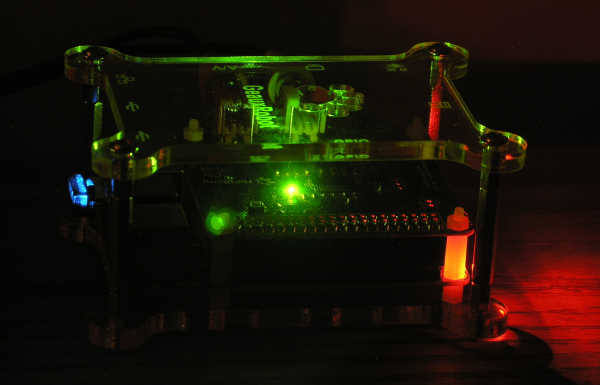
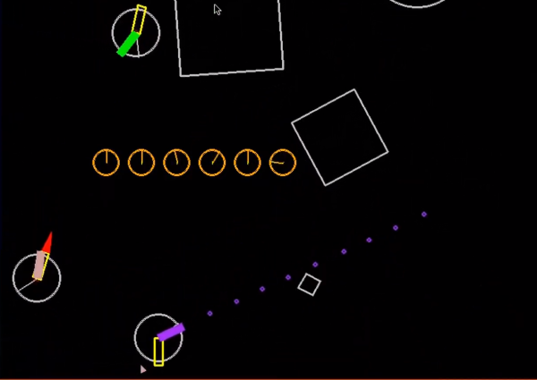

Music, Physics Engines, and the Raspberry Pi
(return) (P.E.T.)
You're welcome to scroll down to the physics-engine section if you
like. There you will find a video and installation
instructions for the Raspberry Pi (RPi).
(This tale is related to the
scripts and videos presented on the
main tutorial page.)
Click to manage cookies. If you accept them, click a video to load; click again to play.

First, some music
From need to revitalize my stereo system came incentive to buy a first Raspberry Pi
(RPi). My college-age sons had introduced me to Spotify. This amazing music
resource needed to somehow get connected to a Bryston amplifier and
Magneplanars that had been too quiet in recent years.
A web search yielded several solutions to this "connection" challenge
where new meets old. The Pi MusicBox seemed like a nice approach:
headless, and with control from my laptop or Android device. The overall
cost of the project was about $100:
- Raspberry Pi 1 Model B+ and power supply
- HiFiBerry DAC board
(digital to analog)
- Edimax WiFi adapter
- SD Card
-
Dog Bone case
- Corner-post extensions (a couple bucks extra)
- The Pi MusicBox
webclient/server (a modification of Mopidy) running on Raspbian (this
also works on the RPi 2)
- Premium Spotify account (about $10 per month).
The photo shows the DAC board stacked on top of the RPi (in the shadow
underneath). Both are housed in the Dog Bone case. If you look carefully,
you can see the little extensions to the case's corner posts that I ordered
to accommodate the added height of the DAC board.
The instructions for imaging the RPi can be found at the Pi MusicBox
site. I followed the
English howto. Basically, you write the Pi MusicBox image to an SD
card and edit the settings.ini file to configure a Wi-Fi connection to your
router (SSID and password). Put the card in the RPi and power it up. Then
connect any browser to its little webserver and start playing music
out of the analog outputs of the DAC board.
It works well and with a significant step up from Bluetooth audio
quality. I like to make playlists using the Spotify client on my laptop and
then access the playlists from the Pi MusicBox client. But you can also
search for music directly on the Pi MusicBox client. An endless supply of
new tunes...
Update note, April 26, 2017: Recently tried
Volumio and like it as an alternate for
the Pi MusicBox software. Found the Spotify Connect plugin for Volumio to
be very good. Playlists are accessible via a Spotify client running on a
laptop, tablet, phone, etc. You do this by using the "Connect to a device"
feature in the Spotify client. This renders (casts) your choices (e.g. pick a song,
start a playlist,...), in the Spotify client, onto to your Raspberry Pi
which is the hardware host for Volumio. Get the
plugin (volspotconnect2.zip),
then follow the installation instructions there.
Another update, September 15, 2023: Volumio has integrated the functionality of
the Spotify Connect plugin into the main Spotify plugin. So, it's much easier to setup now, only need one plugin, just install the main Spotify plugin that is available in Volumio.

Fast enough for a physics engine?
It seemed like only seconds after I put down my cash on the RPi-1-B+ that
the new and improved RPi-2 was announced. Wow, a promising six-fold
improvement in performance and a new incentive to buy. Instead of
encouraging me to listen to new tunes, this RPi-2 would be making objects
move on its screen and hopefully at frame rates that provide a smooth and
stable rendering.
The video here shows that, yes, its 900MHz ARMv7 CPU and VideoCore IV GPU
are enough for the job. This was taken using a
camera aimed at the RPi's display (note that software-based screen-capture
methods burden the RPi and reduce framerates). The script file running here
is A16c_2D_B2D_serverN.py (see corresponding
topic on Using
Pybox2d in Our Framework from the main page). The last section
on this page has discussion on the example scripts included with the Linux-installation
zip file.
Try running this script on your RPi and interact with
the objects in the Pygame window. First, you'll need to run the installation
script described in the next section. Then, from a command line on your RPi,
type the following two commands:
cd ~/Downloads/Linux-install/example-scripts
python A16c_2D_B2D_serverN.py
Note that a wildcard character (*) is helpful for typing these long filenames. For example, the second
line can be typed using the much shorter command:
python A16c*
You'll notice that when this script starts, a second (practice) puck is active
and firing. When it comes time to play with real-people clients, you might
not want the practice puck. In that case, start the script with a
command-line parameter of "off."
python A16c* off
Now it's time to use your keyboard and mouse to interact with objects in
the Pygame window. These commands were used in the video and
are summarized here:
- Select and Move: Click and drag (grab) an
object using the mouse. Each of the three mouse buttons
has a differing mouse-tether spring strength. Try it. Normally this will
auto-select the object's center, but if the "Shift" key is down, any
point on the object can be selected.
- Toggle gravity:
The "g" key acts to toggle gravity ON and OFF. This particular
script changes the background color to blue if gravity is ON. When
gravity is OFF, most collisions are modeled as elastic.
- Stop all translation: The
"f" key momentarily freezes the translation of all objects. They will
start to move again under the effects of gravity or cursor-tether
forces.
- Apply torque: The "t" key will
torque a selected object. Shift-"t" will torque it the other way. Try
spinning one of the squares.
- Stop all rotation: The "r"
key momentarily stops all rotational motion for all objects.
- Pause the Physics Engine: The "p"
key will toggle the physics engine ON and OFF. This stops everything,
physics and rendering. Just hit the "p" key again to wake it up.
This is useful if you're playing the Jello Madness game. You tangle the
jello, hit the "p" key, then give the keyboard and mouse to your
opponent. Your opponent hits the "p" key when ready to start de-tangling
(that also resets the jello timer). When the jello is de-tangled, the
timer will stop. That's the score (sorry, you have to write it down).
Now exchange rolls (your turn). Low score (time) wins.
- Drive and shoot:
If you see a circular object with two rectangles anchored to its center,
that's a puck, and it has a jet and a gun. The "a," "d," and "w" keys
point and fire the jet; the "j," "l," and "i" keys point and fire the
gun. The "s" and "k" keys are used to flip the tube directions into an
orientation opposing the current motion of the puck; this can be useful
in breaking (stopping). Holding down the spacebar turns on a shield that protects you
from the bullets of an opponent (or the test puck).
- Zoom in an out: The "h" and "n" keys
zoom the view in and out. If the left "Ctrl" key is down, mouse
movement acts to pan the view.
- Pick a different demo:
Try pressing each of the number keys above the letters on your keyboard
(not the number pad).
The "7" key starts up the Jello-Madness
demo. The "8" key starts the Puck-Popper demo. If your puck gets popped
and you want to play again, just press the "8" key again.
- Connect a client to the server: From another computer (either Windows or Linux) that
has all the modules installed, type the following in a command line:
python A10_2D_baseline_client.py 192.168.1.197
The parameter at the end of the command is an example IP address. You'll
need to provide the actual address of the computer hosting the
A16c_2D_B2D_serverN.py script. It will print its IP address in the
command window immediately after starting. In the video, you'll see a
second cursor acting to manipulate objects. That's a client computer
which has connected to the RPi server. I'm working both mice, left and
right hands...
The network-client user must have line-of-sight to the server's screen.
A projector would be best for games involving more than a few players.
If you're playing Puck-Popper and the clients get popped (their game pad
has vanished) you can start a new game by first having the clients
reconnect to the server. Do this by re-entering the client startup
command. Just hit the up-arrow key on the client computer; that will
pull up the command from the command-line history; then hit the "Enter"
key. Once the clients have reconnected, press the "8" key on the server
to initialize the game.
If you're having trouble connecting a client to the server computer, it
may be a Windows firewall issue. Please refer to the PDF for the
Multiplayer-Demo topic (search in it for "firewall"). There you will find tips for cleaning out
firewall rules. Note that the server and client scripts both assume a
port value of 4330. If all else fails, try temporarily disabling the
Windows firewall. Raspbian has no firewall, so if server and client are
both on RPis, connection attempts should succeed if both computers have
network access.
So again, yes, the little RPi-2 has enough muscle to host a Python
physics engine. Its low cost opens all this to teaching/learning
environments that are not as well funded as a college J-term course: a high
school, a community center, or even a church looking for a way to share its
message and give the gift of learning to its parishioners and neighbors in
its area.
Installation
The list of Python modules needed for the Linux installation of the
working environment is the same as for the Windows installation:
Of course the details for Linux will differ from the Window's process described on the main page. Python and Pygame are already on Raspbian,
so only three module sets are needed. The Linux installation will involve
building from source code (no .exe executable files like those used for part of the Windows
installation). But in the end, the Linux installation is easier because of
an installation script that does most of the work.
But first, do these two things: (1) check that your keyboard
settings match your keyboard, and (2) expand the file system. Both can be done from the RPi configuration interface (Menu / Preferences /
Raspberry Pi Configuration). From there, click on the "Localisation" tab,
then the "Set Keyboard" button and set the country and variant (e.g.
"United States" and "English (US)"), then click "OK." Next, click on the
"System" tab and then the "Expand Filesystem" button. Then click "OK,"
then "OK" again, and then "Yes" when asked if you want to reboot. If you're
not prompted for the reboot, just do a reboot from the main menu (Menu /
Shutdown / Reboot).
The Linux installation procedure is base on a
script of mine that
installs these modules: PodSixNet, pgu, and pybox2d. So basically you download the zip file, unzip it,
and run the installation script. The following outline gives step-by-step
instructions. Commands typed at the terminal command line
are shown in a bold yellow font.
- Use the RPi's web browser to go to the
Google Drive share and download the Linux-install.zip file.
- Open a terminal window on the RPi and then change to the Downloads folder:
cd ~
cd Downloads
- Unzip the file:
unzip Linux-install.zip
- Change to the Linux-install folder:
cd Linux-install
- Make the installation file executable:
chmod +x installation.sh
- Run the installation file:
sudo ./installation.sh
The installation.sh file takes about 6 minutes to finish. You'll be
prompted a few times and will need to respond and say "yes." There will be many warning messages, especially during the build
for the pybox2d module. That's normal. The final act of the installation script is to add a few lines to the end
of your config.txt file. This sets the color depth to be compatible with the
pybox2d scripts. When it completes, you may notice this message:
"That should do it. Done." If the config.txt file was modified, the script
will reboot the RPi; this serves to activate these color-depth
changes.
An alternative approach to installation is to use the Raspbian-Jessie-withPET.zip
file on the Google Drive share. This zip contains an image which is based on
Raspbian-Jessie and has made use of the installation.sh script to install
the working environment. Uncompress the file and then write the image to
your RPi's micro SD card (16 GB or larger), using Win32DiskImager or
similar, then boot your RPi from it. You'll find the example scripts in
~/Downloads/Linux-install/example-scripts. Oops, just noticed that the
image is set up for left-handed mouse buttons (sorry I'm a lefty). It's easy
to change this: go to Menu / Preferences / Mouse and Keyboard Settings and
uncheck the "Left handed..." box.
Example scripts and tweaks
to the code
Included with the zip file are a handful of example scripts in the
example-scripts folder. These are identical to the corresponding scripts from the
main page. They represent the end
of the three sequences presented there: 1D, 2D, and Box2D. The discussion
below describes recent code changes that were made to improve the performance
of these scripts on the RPi.
-
A07_air_track_hollow_cars.py
The air-track script ran well without modification. This is partly
because 1D-collisions don't involve square roots. In a more general
sense, 1D is less complex and less work for the RPi. Note that some of the keyboard and
mouse commands listed above apply to this script (gravity, translational freezing, demo
selection, and mouse drags).
- vec2d_jdm.py
This vector-class file is needed
by the following 3 files. It must be in their directory
when they run.
-
A09b_2D_vector_sandbox.py
If you've ever wanted to interact with vectors, here's your chance. Refer
to the description of the
vector sandbox
on the main page.
-
A15c_2D_perfect_kiss_serverN.py
This is the final script in the progression of the pure-python 2D
scripts (without pybox2d). There is jittery behavior here, especially when the
ball grids are settling under the influence of gravity. I think it's useful
to see this struggle on the RPi. The physics calculations are at script
level (no compiled physics-engine code like that behind the pybox2d
module that supports the A16c example). This A15c script makes the RPi
work harder than any of the other scripts.
-
A16c_2D_B2D_serverN.py
This A16c
file (see video above) has recent RPi-inspired changes. Some of
these are an attempt to reduce instability related to
excessive acceleration of objects under low frame-rate conditions. For example, a high-strength
spring when connected to a low-mass object can produce large acceleration
(try it; use the strongest cursor tether to grab a small
ball).
- Added operating system detection so that the IP address could be
determined when running on Linux. This allows the code to fork in
places where accommodation is needed for the RPi.
- Made the CR (coefficient of restitution) an attribute for each
object on the air-table instead of a general air-table attribute.
This gives more control of CR when toggling gravity on/off.
- Tested variations in CR, mass, and spring constant parameters for
both the jello and the triangle-of-balls examples. Reduce the number of balls in the grid
examples when running on the RPi.
- Added several server/client features. Server now sends a shutdown
command to the client after a puck pops. The client closes with some
fanfare.
- Added running-average functionality that makes the frame-rate
value more readable.
- Added a practice puck that keeps shooting. This can be turned
off by providing an "off" parameter (without quotes) at
the command line.
- Improved the rendering of the puck shields and the hit flashes.
The shields flash when hit. All hit-flashes are timed so
that they render consistently independent of frame rate.
- Improved the rotational controls for the gun and jet. The
rotation-per-frame is now based on the frame's timestep. This yields
rotation behavior that is independent of the frame rate.
-
A10_2D_baseline_client.py
This is the client that connects to the server in the video.
It sends mouse and keyboard events and presents a Pygame
window showing the mouse position. This runs well on
the RPi and without performance loss when compared to Intel I5 processors. A multi-player configuration that works
best involves running the server on an I5-level processor and using RPi's for all the clients. The RPi
can host the server scripts, but not for more than a few players.
- A16a_BodyTypes.py
This file must run in the pybox2d examples folder. You will find a copy
of it there.
cd ~/Downloads/Linux*/pybox2d*/examples
It runs well on the RPi,
but it's best if you toggle the menu off ("F1" key) and avoid creating too
many bodies. This is generally the case for all the examples in this
folder; as the body count goes up, the framerate will drop.
.
.
.
(return) (P.E.T.)